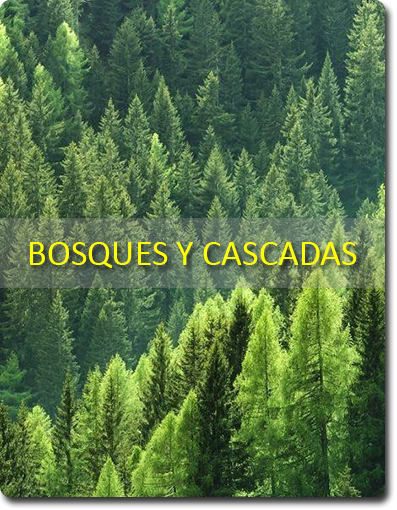
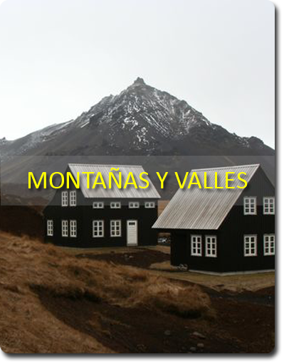
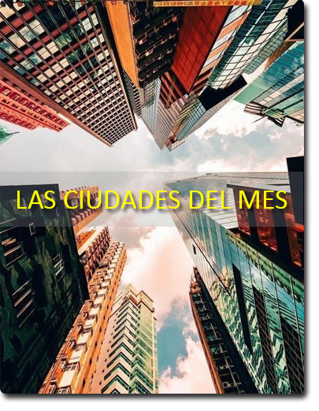

El corazón y el cerebro funcionan mejor en las personas que viajan, las cuales además gozan de menores niveles de estrés, mejor autoestima y bienestar emocional. Resulta que viajar no sólo es una experiencia maravillosa, sino que también es sumamente saludable, pero ¿Sabías que tenemos menos de una quinta parte de la vida para hacer lo que nos gusta y conocer los lugares más emblemáticos en cualquier parte del mundo?
Hoy el mundo se nos representa sin espacios vacíos y el mapamundi es abarcable casi por completo. De hecho, la tecnología abre ventanas al planeta para que lo observemos sin necesidad de salir de casa. Por eso, en esta sección queremos presentarte nuestros post favoritos, que te pueden ser de gran utilidad para tu próximo viaje, así te ayudamos a aprovechar al máximo de los beneficios de viajar y a disfrutarlos como es debido, porque el tiempo no es suficiente.
|  |  |  |

T R A B A J A M O S P A R A Q U E L O S A M A N T E S D E L A A V E N T U R A |